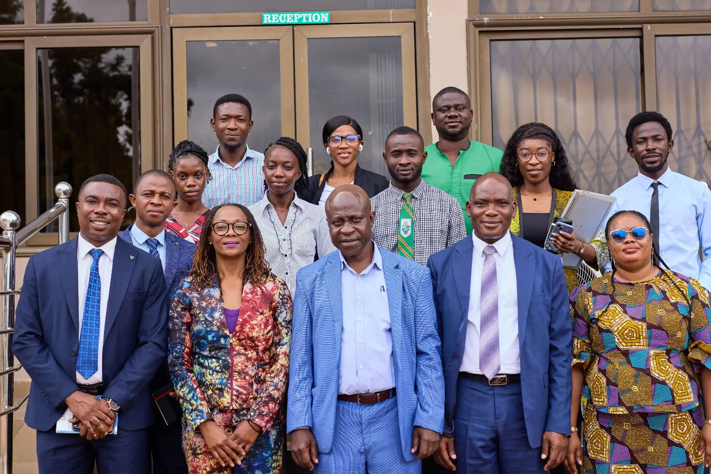

Established in 2019 under the World Bank's Africa Centres of Excellence initiative, RCEES addresses critical energy and environmental challenges across sub-Saharan Africa through internationally competitive research and graduate training.
Based at the University of Energy and Natural Resources (UENR) in Sunyani, Bono Region, the Centre produces graduates equipped to drive development through environmentally sustainable approaches to energy, power systems, and resource management.
"Building human capital, fostering research innovation, and promoting international partnerships for Africa's sustainable energy future."
Prof. Samuel Gyamfi, Centre Director
Problem-oriented research across energy systems and environmental sustainability, from transitions and storage to climate, health, and resource management.
Pathways from fossil fuels to renewable energy systems, including policy frameworks, technology adoption, and socio-economic dimensions of clean energy shifts.
Battery technologies, pumped hydro, thermal storage, and hybrid systems for grid stability and off-grid reliability across sub-Saharan Africa.
Social dimensions of energy access, community energy models, energy poverty, gender and equity in energy systems, and environmental trade-offs.
Air and water quality, pollution impacts on human health, occupational hazards in energy sectors, and environmental determinants of disease in Africa.
Waste management, environmental impact assessment, natural resource governance, and regulatory instruments for sustainable development.
Climate change impacts, adaptation strategies, resilience building, carbon accounting, and mitigation pathways for vulnerable ecosystems and communities.
Scholarly Output
Peer-reviewed research from RCEES faculty, researchers, and graduate students.
The Process of Creating
Empowering Ghana's Engineering Future: A Model for Professional Education in …
View →Empowering Ghana's Engineering Future: A Model for Professional Education in Renewable Energy—and beyond
Berlin Universities Publishing
View →Analysing the Renewable Energy
Empowering Ghana's Engineering Future: A Model for Professional Education in …
View →Future-Proofing through Continuous
Empowering Ghana's Engineering Future: A Model for Professional Education in …
View →Integration at UENR
Empowering Ghana's Engineering Future: A Model for Professional Education in …
View →Modules on Student Preparedness and Employability
EMPOWERINGGHANA’SENGINEERINGFUTURE
View →Scenario analysis of cooking fuel choices and CO2 emission reduction for bioenergy assessment in rural South-East Nigeria
Discover Energy 6 (1)
View →Multivariate Techno-Economic Feasibility of Refuse-Derived Fuel Production in Ghana Using Response Surface Methodology: Insights from a Pilot-Scale System
Clean Technologies 8 (1)
View →Zero-emission food-energy-water nexus framework: a review of pathways to enhance urban resilience and sustainable futures
International Journal of the Energy-Growth Nexus 1 (3)
View →Soil erosion assessment in the White Volta River Basin using USLE and RUSLE models: implications on the Pwalugu Multipurpose Dam Project
CATENA 268
View →'We are the teachers of the nation': A discursive analysis of institutional identity in Ghanaian University anthems
Humanities & Language: International Journal of Linguistics
View →National identity construction through grammatical cohesive devices in independence day speeches in Ghana: A corpus-based study
Linguistics Initiative 6 (1)
View →Identity Construction Among Distance Learners at the University of Education, Winneba
أطراس 7 (1)
View →Digital earth Africa fractional cover products for monitoring land productivity trajectory
African Research Reports 2 (2)
View →Causal Drivers and Future Projections of Urban Wetland Loss in Sunyani East Municipality, Ghana: Implications for Climate Risk and Resilience
View →Quantifying soil erosion rate in Kampe Omi Dam Basin, Nigeria, through integrated geospatial and RUSLE modelling
Discover Soil 3 (1)
View →Estimation of Rainfall and Wind Impacts on Fuel consumption of Passenger vehicles: A Physical model Approach
Scientific African
View →MODELLING CURRENT AND FUTURE IMPACTS OF CLIMATE CHANGE ON MAIZE YIELD IN KANO STATE, NIGERIA
FUDMA JOURNAL OF SCIENCES 10 (2)
View →Transforming energy access in developing economies: An innovative framework for demand response integration
Energy for Sustainable Development 89
3 citations
View →In-situ PV generation forecasting of utility-scale solar power plants in Ghana: Single and hybrid machine learning approaches
Solar Energy Advances
1 citation
View →Assessing the energy transition pathways: Achieving net zero goals in Sierra Leone by 2050
Energy Strategy Reviews 62
2 citations
View →Impact of Climate Change on the Streamflow in the Region of the Proposed Pwalugu Hydropower Plant
Journal of Atmospheric Science Research| Volume 8 (04)
View →DESIGNING A CONTEXT-SPECIFIC BUSINESS MODEL TO ACCELERATE ELECTRIC MOBILITY ADOPTION IN GHANA
View →A Comparative Analysis of Selected Improved Biomass Cookstoves’ Temperature Profiles Using the Testo 310 Flue Gas Analyzer
New Energy Exploitation and Application 4 (2)
View →Post technical assessment and field manual for solar home systems in island communities: The case of Ghana
Solar Compass 14
1 citation
View →Socio-economic factors influencing the adoption of solar home systems: The case study of Ghana
Scientific African 28
2 citations
View →Integrated assessment of nuclear-renewable hybrid energy systems: A pathway to sustainable and resilient industrial electrification in Ghana
African journal of applied research 11 (2)
10 citations
View →Navigating renewable energy transition challenges for a sustainable energy future in Ghana
Solar energy and sustainable development Journal 14 (1)
32 citations
View →Techno-economic and environmental assessment of grid and solar photovoltaic microgrid supply options for isolated off-grid rural communities toward sustainable and affordable …
Results in Engineering 25
14 citations
View →Impact of Socio-Economic Factors on ICT Adoption in Basic Schools in Wa Municipality
GSC Adv. Res. Rev 24
1 citation
View →Electricity prosumption adoption: what to know and what you can do
The Intersection of Blockchain and Energy Trading
View →Optimization of biodiesel production using oil extracted from microalgae harvested in Ghana
South African Journal of Chemical Engineering 53 (1)
6 citations
View →Time series forecast of power output of a 50MWp solar farm in Ghana
Solar Compass 14
4 citations
View →Assessing the impact of small-scale mining activities on land use land cover and the sustainability of mining practices in Ghana: A case of the Atiwa East district
Resources Policy 109
1 citation
View →Assessing the environmental and socio-economic impacts of small-scale mining activities in the Atiwa East District of Ghana
Scientific African 27
11 citations
View →A growing concern: investigating sustainable water quality and urban food production in Freetown, Sierra Leone
Water Supply 25 (2)
2 citations
View →Evaluating the landscape of the 1918 influenza and the 2019 coronavirus pandemics in mapping potential sentinel surveillance sites for emerging and re-emerging infectious …
Clinical Epidemiology and Global Health 31
View →Assessment of the biogas potential of a small-scale biodigester using ASPEN plus simulation
Discover Energy 5 (1)
View →An assessment of a solar PV-powered IoT monitoring system for small-scale biogas digesters
Discover Internet of Things 5 (1)
1 citation
View →EXPLORING ENABLERS AND BARRIERS FOR UPSCALING BIOENERGY TECHNOLOGIES FOR SUSTAINABLE BIOGAS ADOPTION IN NIGERIA THROUGH A STAKEHOLDER PARTICIPATORY APPROACH
Journal of African Sustainable Development
View →Kinetic Modelling and Simulation of Anaerobic Digestion of Fibrous Waste Materials and Slaughterhouse Waste
Array
1 citation
View →Assessing small-scale biogas digester adoption challenges and prospects in Ghana: Challenges and prospects of biogas adoption in Ghana
International Journal of Energy and Water Resources 9 (3)
3 citations
View →Using a Bayesian isotope mixing model to assess nitrate sources in groundwater: A case study of Granvillebrook and Kingtom dumpsites, Sierra Leone
Journal of African Earth Sciences 226
2 citations
View →To what extent is hydrolysis pretreatment effective for biogas yield enhancement
View →Evaluating opportunities of refuse derived fuel for energy-based industrial symbiosis towards a circular economy-a case study
Journal of Environmental Management 380
12 citations
View →An Evaluation of Biogas Potential of Cassava, Yam and Plantain Peel Mixtures Using Theoretical Models and Hohenheim Biogas Yield Test-Based Experiments
Energies 18 (4)
4 citations
View →Technical and Economic analysis of solar PV electricity generation under the net metering scheme at Sunyani Teaching Hospital (STH), Ghana
Renewable and Sustainable Energy Transition 6
15 citations
View →Informal artisanal and small-scale mining in sub-saharan Africa: Policy evolution, sector formalization, and future trajectories
Resources Policy 109
4 citations
View →Evidence of heatwaves: characteristics and trends in selected ghanaian cities
International Journal of Climatology 45 (10)
1 citation
View →Assessing livelihood and environmental implications of artisanal and small-scale mining: a case of Akango mining, Nzema East Municipality, Western Region, Ghana: K. Cudjoe et al.
Environment
13 citations
View →“Those… with an Impunity, Be Warned”: Language and Power in Senior High School Leadership WhatsApp Discourse in Ghana
Studies in Linguistics and Language Education 1 (2)
View →Potential for small hydropower development in the Tano River Basin of Ghana using SWAT and RETScreen
Energy for Sustainable Development 86
5 citations
View →A spotlight on fossil fuel lobby and energy transition possibilities in emerging oil-producing economies
Heliyon 11 (1)
13 citations
View →" Sir, Please Can I Speak Twi?": Examining Students' Linguistic Rights in Senior High Schools in Ghana
International Journal for Multilingual Education 26 (2)
View →Modeling temperature and humidity effects on automobile fuel consumption and emissions
Discover Environment 3 (1)
1 citation
View →Adoption of E-Vehicles in Ghana and How it Will Empower Women
Journal of Nature-Based Solutions and Innovations 1 (2)
View →The Future of the Mining Industry in Ghana
Journal of Nature-Based Solutions and Innovations 1 (2)
View →Addressing the Challenge of Illegal Small-Scale Mining (Galamsey) in Ghana: A Call for Sustainable Solutions
Journal of Nature-Based Solutions and Innovations 1 (2)
View →Simulating future climate changes under the shared socioeconomic pathway scenarios: a case of the black volta basin of Ghana
Frontiers in Environmental Science 13
1 citation
View →Land productivity declines in the GGW while human contributions to restoration far outweighing degradation
Scientific Reports 15 (1)
2 citations
View →Strengthening the partnership between the great green walls of China and Africa
Geography and Sustainability
2 citations
View →comparative study of conventional and biofuels for sustainable mobility: a case study of Ghana
African Green Transition Through Innovative Pathways
1 citation
View →Flood projections over the White Volta Basin under the shared socioeconomic pathways: an analytical hierarchical approach
Frontiers in Climate 7
3 citations
View →Impacts of Climate Change on Hydropower Generation in the Shire River Basin of Malawi
Climate
View →Assessment of commercial vehicle models in the urban public transport of Ghana
Discover Cities 2 (1)
5 citations
View →A 30-meter resolution global land productivity dynamics dataset from 2013 to 2022
Scientific Data 12 (1)
4 citations
View →Spatial assessment of soil erosion for prioritizing efforts on SDG15. 3 in Ethiopia
Frontiers in Remote Sensing 6
1 citation
View →Decarbonisation in the Transport Sector of Ghana Using Autogas
Advances in Science and Technology 160
3 citations
View →Future land use simulation modeling for sustainable urban development under the shared socioeconomic pathways in West African megacities: Insights from Greater Accra Region
Journal of Environmental Management 376
11 citations
View →Spatio-temporal dynamics, drivers of wildfire occurrence and distribution in the northern savannah ecological zone of Ghana
Scientific African 27
10 citations
View →Heat, Harm, and Hope: Ghana’s Savanna Ecosystem Services in a Fiery Climate
Journal of Nature-Based Solutions and Innovations 1 (1)
View →Editorial–Could Shea be the next gold for Ghana?
Journal of Nature-Based Solutions and Innovations 1 (1)
View →Impacts of Climate Change on Hydropower Generation in the Shire River Basin, Malawi
Proceedings of the 9th IAHR International Junior Researcher and Engineer …
View →Impact and integration techniques of renewable energy sources on smart grid operations: A systematic review
Scientific African
21 citations
View →Stochastic behaviour of Ghana power grid with massive electro-mobility penetration
Scientific African 27
View →Assessment of PV excess generation savings in Ghana considering peer-to-peer energy trading
Energy Sources
1 citation
View →Assessment of the optimum location and hosting capacity of distributed solar PV in the southern interconnected grid (SIG) of Cameroon
International Journal of Sustainable Energy 43 (1)
27 citations
View →Determinants of household cooking fuel choices: Does proximity to mine site matter?
Energy for Sustainable Development 82
8 citations
View →Development of an ARIMAX model for forecasting airport electricity consumption in Accra-Ghana: The role of weather and air passenger traffic
E-Prime-Advances in Electrical Engineering
12 citations
View →Advancing africa's sustainable energy development through small modular reactors (smrs) as low-carbon power solution
2024 IEEE 12th International Conference on Smart Energy Grid Engineering …
7 citations
View →Techno-economic analysis of solar PV electricity generation at the university of environment and sustainable development in Ghana
Energy Reports 11
30 citations
View →Analysis of contingency scenarios towards a suitable transmission pathway in the southern interconnected grid (SIG) of Cameroon
e-Prime-Advances in Electrical Engineering
14 citations
View →Optimizing residential demand response in Ghana through iterative techniques and home appliance trend analysis
Heliyon 10 (4)
10 citations
View →LULC changes in the region of the proposed Pwalugu hydropower project using GIS and remote sensing technique
Journal of Geography and Cartography 7 (2)
5 citations
View →Assessment of Post-Combustion CO2, CO and PM2. 5 Levels from Selected Improved Biomass Cookstoves in Sierra Leone
SSRG Int. J. Mech. Eng 11
2 citations
View →Criticality and severity of adverse effects of the sun on performance of solar PV systems
Solar Energy Advances 4
17 citations
View →Ghana's Path to a Sustainable Energy Future: Assessing Renewable (Solar and Wind) Energy Penetration in the Generation Mix
Samuel and Debrah
2 citations
View →Integration of multiple distributed solar PV (DSP) into the grid: The case of the distribution network in Freetown, Sierra Leone
Solar Compass 10
5 citations
View →Assessing the performance of hydro-solar hybrid (HSH) grid integration: A case study of Bui Generating Station, Ghana
Solar Compass 10
6 citations
View →Assessing Peak Load Reduction Potential on Distribution Network: A Case Study of Residential Households in Freetown, Sierra Leone
International Journal of Energy Research 2024 (1)
1 citation
View →Modeling the fate and transport of E. coli pathogens in the Tano River Basin of Ghana under climate change and socioeconomic scenarios
Environmental Science and Pollution Research 31 (50)
1 citation
View →Water, environment, and health nexus: understanding the risk factors for waterborne diseases in communities along the Tano River Basin, Ghana
Journal of Water and Health 22 (8)
15 citations
View →Success of the tender stage of Ghanaian public labor-based construction projects
Journal of Public Procurement 24 (3)
2 citations
View →Assessment of dumpsites leachate, geotechnical properties of the soil, and their impacts on surface and groundwater quality of Sunyani, Ghana
Environmental Advances 16
16 citations
View →Assessment of current water, sanitation, and hygiene (WASH) practices in the third and ninth districts of N'Djamena, Chad
Journal of Water and Health 22 (2)
11 citations
View →Nonlinear interaction and compounding factors of vehicle parameters influencing exhaust pollution
PloS one 19 (12)
3 citations
View →Resource Characterisation and Biogas Potential Determination of Cassava, Yam and Plantain Peel Mixtures Using Theoretical Models and Hbt Based Experiments
Preprints
View →Evaluation of energetic potential of slaughterhouse waste and its press water obtained by Pressure-Induced separation via anaerobic digestion
Energies 17 (22)
6 citations
View →Flood risk assessment under the shared socioeconomic pathways: a case of electricity bulk supply points in Greater Accra, Ghana
Discover Water 4 (1)
3 citations
View →Evaluation of Energetic Potential of Slaughterhouse Waste via Anaerobic Digestion by Pressure Induced Separation in West-Africa
Preprints
View →Review of Nigeria’s renewable energy policies with focus on biogas technology penetration and adoption
Discover Energy 4 (1)
21 citations
View →Quantifying future climate extreme indices: implications for sustainable urban development in West Africa, with a focus on the greater Accra region
Discover Sustainability 5 (1)
4 citations
View →Towards sustainable and affordable energy for isolated communities: A technical and economic comparative assessment of grid and solar PV supply for Kyiriboja, Ghana
Solar Compass 10
11 citations
View →Advancing circular economy for the growth, root development and elemental characteristics of bamboo (Bambusa vulgaris) on galamsey-degraded soil
Advances in Bamboo Science 6
8 citations
View →A systematic review of the design considerations for the operation and maintenance of small-scale biogas digesters
Heliyon 10 (1)
66 citations
View →Evaluating the categorical effect of vehicle characteristics on exhaust emissions
African Transport Studies 2
3 citations
View →Investigating the Quality of Harvested Rainwater and the Perception of Users and Non-Users in Sunyani, Ghana
Water Conservation Science and Engineering 9 (2)
1 citation
View →Assessment of Health Impacts of Rock Blasting Activities on Ntotoroso and Gyedu Communities, Ahafo Region, Ghana
Transactions of the Indian National Academy of Engineering 9 (4)
1 citation
View →Safety Evaluation of Marketed Anti-Diabetic Herbal Medicines in Ghana
African Journal of Applied Research 10 (2)
View →Nutrients monitoring on the Bui multipurpose dam project in the Savannah region of Ghana
Environmental Nanotechnology
1 citation
View →Assessment of energy security in West Africa: A case study of three countries
Heliyon 10 (21)
7 citations
View →Tracing sulfate sources in a tropical agricultural catchment with a stable isotope Bayesian mixing model
Science of the Total Environment 951
12 citations
View →Predicting climate-driven changes in reservoir inflows and hydropower in Côte d'Ivoire using machine learning modeling
Energy 302
13 citations
View →Delineation of flood risk terrains and rainfall visualisation in the North Western part of Ghana
Modeling Earth Systems and Environment 10 (3)
5 citations
View →Evaluating climate change scenarios in the white Volta Basin: a statistical bias-correction approach
Physics and Chemistry of the Earth
4 citations
View →Antagonistic activity of secondary metabolites from rhizofunctional bacteria extracts against Fusarium species.
African Journal of Clinical & Experimental Microbiology 25 (1)
3 citations
View →Potential for small hydropower development on the Pumpum River of Ghana using remote sensing and soil water assessment tool
Green Technologies and Sustainability 2 (1)
7 citations
View →GGW-BDF: an online tool for using earth observation and Chinese ecosystem restoration experiences in support of the Great Green Wall initiative
International Journal of Digital Earth 17 (1)
5 citations
View →Assessment of climate change in the North-East region of Côte d ‘Ivoire: future precipitation, temperature, and meteorological drought using CMIP6 models
Cogent Engineering 11 (1)
10 citations
View →Utilizing the Achievements of Data Acquiring Solution and Cloud Service Platform for China-Africa Cooperation on Satellite Remote Sensing Application
The International Archives of the Photogrammetry
View →Sandy desertification monitoring with the Relative Normalized Silica Index (RNSI) based on SDGSAT-1 thermal infrared image
Remote Sensing of Environment 308
11 citations
View →In vitro assessment of crude oil degradation by Acinetobacter junii and Alcanivorax xenomutans isolated from the coast of Ghana
Heliyon 10 (3)
11 citations
View →Terrestrial water storage and climate variability study of the Volta River Basin, West Africa: J. Atayi et al.
Theoretical and Applied Climatology 155 (1)
6 citations
View →Economic viability and environmental sustainability of a grid-connected solar PV plant in Yaounde-Cameroon using RETScreen expert
Cogent Engineering 10 (1)
29 citations
View →A review of hybrid renewable energies optimisation: design, methodologies, and criteria
International Journal of Sustainable Energy 42 (1)
42 citations
View →Perceived value of recommended product and consumer e-loyalty: an expectation confirmation perspective
Young Consumers 24 (6)
21 citations
View →Impacts of LULC and climate changes on hydropower generation and development: A systematic review
Heliyon 9 (11)
22 citations
View →Assessing the viability and environmental impact of residential demand response programs: A case study in East Legon, Greater Accra, Ghana
Energy Reports 10
10 citations
View →Degradation analysis of polycrystalline silicon modules from different manufacturers under the same climatic conditions
Energy Conversion and Management: X 20
32 citations
View →Data analytics for prediction of solar PV power generation and system performance: A real case of Bui Solar Generating Station, Ghana
Scientific African 21
29 citations
View →Advancing Access to Affordable and Reliable Electricity Through Nuclear and Renewable Hybrid Energy Systems
Applied Research Conference in Africa
3 citations
View →Evaluating the effectiveness of clean energy technologies (renewables and nuclear) and external support for climate change mitigation in Ghana
2023 IEEE 11th International Conference on Smart Energy Grid Engineering …
13 citations
View →A techno-economic and environmental assessment of a low-carbon power generation system in Cameroon
Energy Policy 179
16 citations
View →Characterisation of visual defects on installed solar photovoltaic (PV) modules in different climatic zones in Ghana
Scientific African 20
20 citations
View →Techno-economic analysis of waste-to-energy with solar hybrid: a case study from Kumasi, Ghana
Solar Compass 6
19 citations
View →The pathway for electricity prosumption in Ghana
Energy Policy 177
17 citations
View →Economic evaluation of solar PV electricity prosumption in Ghana
Solar Compass 5
33 citations
View →Driving the clean energy transition in Cameroon: A sustainable pathway to meet the Paris climate accord and the power supply/demand gap
Frontiers in Sustainable Cities 5
29 citations
View →Assessment of low-carbon energy transitions policies for the energy demand sector of Cameroon
Energy for Sustainable Development 72
35 citations
View →Hybrid renewable energy system optimization via slime mould algorithm
Int. J. Eng. Trends Technol 6
6 citations
View →Technological advances in prospecting sites for pumped hydro energy storage
Pumped Hydro Energy Storage for Hybrid Systems
6 citations
View →Techno-economic challenges of pumped hydro energy storage
Pumped Hydro Energy Storage for Hybrid Systems
7 citations
View →Renewable energy communities in africa: a case study of five selected countries
Doctoral Conference on Computing
4 citations
View →The role of nuclear energy in reducing greenhouse gas (GHG) emissions and energy security: a systematic review
International Journal of Energy Research 2023 (1)
41 citations
View →Concept for cost-effective pumped hydro energy storage system for developing countries
Pumped Hydro Energy Storage for Hybrid Systems
6 citations
View →Need for pumped hydro energy storage systems
Pumped Hydro Energy Storage for Hybrid Systems
5 citations
View →Characteristic features of pumped hydro energy storage systems
Pumped hydro energy storage for hybrid systems
17 citations
View →Lessons for pumped hydro energy storage systems uptake
Pumped Hydro Energy Storage for Hybrid Systems
2 citations
View →Case studies on hybrid pumped hydro energy storage systems
Pumped Hydro Energy Storage for Hybrid Systems
5 citations
View →Physicochemical properties and heavy metals distribution of waste fine particles and soil around urban and peri-urban dumpsites
Environmental Challenges 13
20 citations
View →Deep learning-based framework for vegetation hazard monitoring near powerlines
Spatial information research 31 (5)
10 citations
View →Assessment of irrigation water quality for vegetable production in the Bono and Bono East regions
Journal of the Ghana Institution of Engineering (JGhIE) 23 (3)
6 citations
View →Environmental and Public Health Impacts Associated With Septic Tank Systems (Soak Aways) At Nkwaben South in the Sunyani Municipality
Global Scientific Journals 11 (6)
2 citations
View →Characterization of dumpsite waste of different ages in Ghana
Heliyon 9 (5)
13 citations
View →Leaving no disease behind: The roadmap to securing universal health security and what this means for the surveillance of infectious diseases in Ghana as a precedent for sub …
Plos one 18 (4)
5 citations
View →Exploring key drivers of forest fires in the Mole National Park of Ghana using geospatial tools
Spatial information research 31 (1)
4 citations
View →Seasonal assessment of heavy metal contamination of groundwater in two major dumpsites in Sierra Leone
Cogent engineering 10 (1)
26 citations
View →Cassava (Manihot esculenta) Yield, Nutrition, and Heavy Metal Bioaccumulation Responses to Circular Economy-Based Innovations in a Mining-Degraded Landscape
Nutrition
1 citation
View →Hydrothermal treatment (HTT) improves the combustion properties of regional biomass waste to face the increasing sustainable energy demand in Africa
Fuel 351
10 citations
View →Pyrolysis of plastic waste into diesel engine-grade oil
Scientific African 21
41 citations
View →Assessment of water quality in boreholes from Tagrayire (Magazine) in Wa Municipality
International Journal of Environmental Studies 80 (4)
4 citations
View →Optimisation of the anaerobic co-digestion process of Calotropis procera leaves, stems, and cow dung using a mixture design
South African Journal of Chemical Engineering 45 (1)
9 citations
View →A review of policies and legislations of vehicular exhaust emissions in Ghana and their enforcement
Aerosol Science and Engineering 7 (2)
5 citations
View →Application of stable isotope of water and a Bayesian isotope mixing model (SIMMR) in groundwater studies: a case study of the Granvillebrook and Kingtom dumpsites
Environmental Monitoring and Assessment 195 (5)
7 citations
View →Assessment of Shared Socioeconomic Pathway (SSP) climate scenarios and its impacts on the Greater Accra region
Urban Climate 49
90 citations
View →Urban multi-model hydroclimate projections and impact assessment of the Shared Socioeconomic Pathway (SSP) scenario in Greater Accra
XXVIII General Assembly of the International Union of Geodesy and Geophysics …
View →Quantifying the narratives: extreme climate projections under the shared socioeconomic pathway scenario in greater accra
Available at SSRN 4496721
3 citations
View →Impact of market infrastructure on pumped hydro energy storage systems
Pumped Hydro Energy Storage for Hybrid Systems
1 citation
View →Baseline assessment of naturally occurring radionuclides in borehole water of Asikam-gold mining community in Ghana
Scientific African 20
15 citations
View →Spatiotemporal patterns in land use/land cover observed by fusion of multi-source fine-resolution data in West Africa
Land 12 (5)
9 citations
View →Environmental and health impacts of mining: a case study in Kenyasi-Ahafo Region, Ghana
Arabian Journal of Geosciences 16 (5)
4 citations
View →Geochemical assessment and pollution evaluation of stream sediments’ quality impacted by industrial activities at Suame Magazine area, Kumasi, Ghana
Arabian Journal of Geosciences 16 (4)
3 citations
View →Projections and impact assessment of the local climate change conditions of the Black Volta Basin of Ghana based on the Statistical DownScaling Model
Journal of Water and Climate Change 14 (2)
11 citations
View →Interactions between climate and land cover change over West Africa
Land 12 (2)
13 citations
View →Interactions between Climate and Land Cover Change over West Africa. Land 2023, 12, 355
View →Understanding Denitrification in a Tropical Agricultural Ecosystem
AGU Fall Meeting Abstracts 2023 (1713)
View →Assessing the influence of a dam reservoir on groundwater quality using geochemical and stable isotopes techniques
Journal of African Earth Sciences 205
3 citations
View →Disentangling nitrate pollution sources and apportionment in a tropical agricultural ecosystem using a multi-stable isotope model
Environmental Pollution 328
54 citations
View →Opportunities and Challenges in the Efficient Exploiting of Land, Energy and Water Resources within the Volta and Tana Basins in Africa
EGU23
View →Statistical and isotopic analysis of sources and evolution of groundwater
Physics and Chemistry of the Earth
9 citations
View →A Review of sewerage and drainage systems typologies with case study in Abidjan, Côte d'Ivoire: failures, policy and management techniques perspectives
Cogent Engineering 10 (1)
16 citations
View →Student entrepreneurship is more popular than ever–but how can biochemistry students get involved?
The Biochemist 45 (6)
1 citation
View →Isotope Signatures and Chloride Mass Balance Application in Groundwater Studies Within the Volta River Basin: A Case Study of the Afram Plains South District, Ghana
AGU Fall Meeting Abstracts 2023 (1422)
View →Toward understanding land use land cover changes and their effects on land surface temperature in yam production area, Côte d'Ivoire, Gontougo Region, using remote sensing and …
Frontiers in Remote Sensing 4
20 citations
View →Assessment of solid and liquid wastes management and health impacts along the failed sewerage systems in capital cities of African countries: case of Abidjan, Côte d'Ivoire
Frontiers in Water 5
3 citations
View →Operational and structural diagnosis of sewerage and drainage networks in Côte d'Ivoire, West Africa
Frontiers in Sustainable Cities 5
9 citations
View →Isolation and characterization of crude-oil-dependent bacteria from the coast of Ghana using oxford nanopore sequencing
Heliyon 9 (2)
12 citations
View →Climate variability and change impacts on vehicular fuel consumption and emissions
STED Journal 5 (1)
View →Power generation expansion pathways: A policy analysis of the Cameroon power system
Energy Strategy Reviews 44
39 citations
View →Design and construction of smart solar powered egg incubator based on GSM/IoT
Scientific African 17
43 citations
View →Comparative assessment of a stand-alone and a grid-connected hybrid system for a community water supply system: A case study of Nankese community in the eastern region of Ghana
Scientific African 17
13 citations
View →Assessment of the economic viability of nuclear-renewable hybrid energy systems: case for Ghana
2022 IEEE 10th International Conference on Smart Energy Grid Engineering …
10 citations
View →Characterisation of degradation of photovoltaic (PV) module technologies in different climatic zones in Ghana
Sustainable Energy Technologies and Assessments 52
31 citations
View →Impact assessment of grid tied rooftop PV systems on LV distribution network
Scientific African 16
40 citations
View →Modeling electricity demand response potential for residential households in Ghana, case study of 300 households in Sunyani
ADRRI Journal of Engineering and Technology 6 (1 (5)
2 citations
View →The role of demand response in residential electricity load reduction using appliance shifting techniques
International Journal of Energy Sector Management 16 (4)
32 citations
View →Investigation into the impacts of design, installation, operation and maintenance issues on performance and degradation of installed solar photovoltaic (PV) systems
Energy for Sustainable Development 66
119 citations
View →Bullying victimisation among deaf adolescents: A school-based self-report survey in Ghana
International Journal of Disability
5 citations
View →Development of measurement scale for personalized recommended product acceptance (Prpa-Scale)
Malaysian E Commerce Journal 6 (2)
4 citations
View →Technical considerations for the design and selection of improved Cookstoves: A review
Int. J. Eng. Trends Technol 70 (12)
5 citations
View →Evaluation of reactive power support in solar PV prosumer grid
e-Prime-Advances in Electrical Engineering
22 citations
View →The role of demand-side management in sustainable energy sector development
Renewable Energy and Sustainability
16 citations
View →An overview of energy resource and future concerns for Ghana’s electricity generation mix
Journal of Energy 2022 (1)
23 citations
View →Modeling, Simulation and Design of Hydro-Solar Isolated Micro-grid without a Battery Storage System: A Case Study for Aba Business Cluster, Nigeria
International Journal of Engineering Trends and Technology 70 (2)
5 citations
View →Techno-economic analysis of municipal solid waste gasification for electricity generation
International Journal of Energy Economics and Policy 12 (1)
12 citations
View →Online personalized recommended product quality and e-impulse buying: A conditional mediation analysis
Journal of Retailing and Consumer Services 64
130 citations
View →From energy security to security of energy services: the role of gendered innovations in living labs
South African Journal of Industrial Engineering 33 (2)
4 citations
View →Modelling gendered innovation for the security of energy services in poor urban environments
Systems Research and Behavioral Science 39 (2)
12 citations
View →Indicators for sanitation quality in low-income urban settlements: evidence from Kenya, Ghana, and Bangladesh
Social Indicators Research 162 (2)
24 citations
View →The impact of pro-poor sanitation subsidies in open defecation-free communities: a randomized, controlled trial in rural Ghana
Environmental health perspectives 130 (6)
26 citations
View →Shared but clean household toilets: what makes this possible? Evidence from Ghana and Kenya
International journal of environmental research and public health 19 (7)
14 citations
View →Drinking water quality and health risk assessment of intake and point-of-use water sources in Tano North Municipality, Ghana
Journal of Water
39 citations
View →Can open-defecation free (ODF) communities be sustained? A cross-sectional study in rural Ghana
PLoS One 17 (1)
34 citations
View →Reviewing the Past, Present, and Future Risks of Pathogens in Ghana and What This Means for Rethinking Infectious Disease Surveillance for Sub‐Saharan Africa
Journal of tropical medicine 2022 (1)
8 citations
View →Impact of the ban on illegal mining activities on raw water quality: A case-study of Konongo Water Treatment Plant, Ashanti Region of Ghana
Journal of Sustainable Mining 21 (2)
15 citations
View →Anaerobic digestion of calotropis procera for biogas production in arid and semi-arid regions: A case study of Chad
Cogent Engineering 9 (1)
6 citations
View →A review of response surface methodology for biogas process optimization
Cogent Engineering 9 (1)
88 citations
View →Characterization of municipal solid waste and assessment of its potential for refuse-derived fuel (RDF) valorization
Energies 16 (1)
63 citations
View →Application of multivariate and geospatial techniques to assess groundwater quality of two major dumpsites in Sierra Leone
Environmental Nanotechnology
12 citations
View →Characterization of fuel and mechanical properties of charred agricultural wastes: Experimental and statistical studies
Energy Reports 8
56 citations
View →The role of renewable energies in sustainable development of Ghana
Scientific African 16
91 citations
View →Anaerobic co‐digestion of human feces with rice straw for biogas production: a case study in Sunyani
Modelling and Simulation in Engineering 2022 (1)
21 citations
View →Assessment of Urban Heat Island and Urban Pollution Island Synergy During the Dry Season in Greater Accra, Ghana
International Conference on Air Quality in Africa
2 citations
View →Ghanaian inclination towards household waste segregation for sustainable waste management
Scientific African 17
44 citations
View →The emergence of artisanal gold mining and local perceptions in the Hounde municipality, Burkina Faso
Scientific African 17
10 citations
View →Relationship between climate and land use land cover change over West Africa
View →Auto-rickshaw repair, servicing and maintenance for youth-in-entrepreneurship in kumasi
Sustainability 14 (14)
5 citations
View →Effect of traffic congestion on productivity in Ghana: Evidence from AtwimaNwabiagya municipality, Ashanti Region-Ghana
International Journal of Traffic and Transportation Engineering 11 (1)
3 citations
View →Impact of mining on land use land cover change and water quality in the Asutifi North District of Ghana, West Africa
Environmental Challenges 6
145 citations
View →Modeling current and future groundwater demands in the White Volta River Basin of Ghana under climate change and socio-economic scenarios
Journal of Hydrology: Regional Studies 41
56 citations
View →Assessing climate change projections in the Volta Basin using the CORDEX-Africa climate simulations and statistical bias-correction
Environmental Challenges 6
84 citations
View →The impact of climate action on energy security in West Africa: Evidence from Burkina Faso, Ghana and Nigeria
OPEC Energy Review 46 (4)
3 citations
View →Modeling climate change impact on inflow and hydropower generation of Nangbeto dam in West Africa using multi-model CORDEX ensemble and ensemble machine learning
Applied Energy 325
34 citations
View →Decision optimization techniques for evaluating renewable energy resources for power generation in Ghana: MCDM approach
Energy Reports 8
76 citations
View →Techno-Economic Feasibility of Hydropower Generation from Water Supply Networks in Ghana
Applied Research Conference in Africa
View →Assessing the Hydrological Implications of Small Reservoirs on Streamflow of the White Volta Basin in Ghana
Available at SSRN 4180088
1 citation
View →Integrated modeling of hydrological processes and groundwater recharge based on land use land cover, and climate changes: A systematic review
Environmental Advances 8
114 citations
View →Codeswitching in political campaign speeches: The case of Nana Addo Danquah Akuffo-Addo
2 citations
View →Machine learning based groundwater prediction in a data-scarce basin of Ghana
Applied Artificial Intelligence 36 (1)
21 citations
View →Assessment of groundwater potential zones using GIS and remote sensing techniques in the Bole District, Savannah Region, Ghana
International Journal of Energy and Water Resources 6 (4)
28 citations
View →Hydrological modelling for reservoir operation: application of SWAT Model for Kalu Ganga Catchment, Sri Lanka
Engineer: Journal of the Institution of Engineers
3 citations
View →Delineation of groundwater potential zones in the Central Region of Ghana using GIS and fuzzy analytic hierarchy process
Modeling Earth Systems and Environment 8 (4)
16 citations
View →A Review of Sewerage and Drainage Systems Management in Sub-Saharan African Cities: Case of Abidjan, Côte d’Ivoire.
View →Climate change-induced reduction in agricultural land suitability of West-Africa's inland valley landscapes
Agricultural Systems 200
48 citations
View →Spatio-temporal trends of precipitation and temperature extremes across the north-east region of Côte d'Ivoire over the period 1981-2020.
View →Spatio-temporal trends of precipitation and temperature extremes across the North-East Region of Cote d’Ivoire over the period 1981–2020
Climate 10 (5)
23 citations
View →Groundwater recharge estimation and potential recharge mapping in the Afram Plains of Ghana using SWAT and remote sensing techniques
Groundwater for Sustainable Development 17
37 citations
View →Spatio-Temporal Trends of Precipitation and Temperature Extremes across the North-East Region of Côte d’Ivoire over the Period 1981–2020. Climate 2022, 10, 74
s Note: MDPI stays neutral with regard to jurisdictional claims in published …
2 citations
View →Estimating residential electricity consumption for appliance use: A statistical model approach
2021 International Conference on Electrical
1 citation
View →Influencing factors of students’ smartphones use for academic purposes: A developing country’s perspective
International Journal of Emerging Technologies in Learning (IJET) 16 (23 …
11 citations
View →Quantitative estimation of the impact of climate change on residential electricity demand for the city of Greater Accra, Ghana
International Journal of Energy Sector Management 15 (6)
15 citations
View →Anonymity, systems characteristics, and feedback provision in online learning communities
International Journal of Web-Based Learning and Teaching Technologies …
1 citation
View →Degradation analysis of installed solar photovoltaic (PV) modules under outdoor conditions in Ghana
energy Reports 7
91 citations
View →Public Health Policies in the Akyem Abuakwa of Ghana (1850-1957)
Ethnologia Actualis 20 (2)
View →Saving electricity in an emergency, experiences from some countries and lessons for Ghana
ADRRI J Eng Technol 53 (4)
2 citations
View →Distributed generation and renewable energy integration into the grid: Prerequisites, push factors, practical options, issues and merits
Energies 14 (17)
312 citations
View →Making Energy Savings by the Engagement of Small and Medium-sized Enterprise on Energy Management
Journal of Electrical and Electronic Engineering 9 (2)
2 citations
View →Potential of meeting electricity needs of off-grid community with mini-grid solar systems
Scientific African 11
52 citations
View →Status of renewable energy resources for electricity supply in Ghana
Scientific African 11
171 citations
View →Lighting Energy Need and Sustainability
Affordable and Clean Energy
1 citation
View →Assessing the impact of demand response on peak demand in a developing country: The case of Ghana
IOP Conference Series: Earth and Environmental Science 642 (1)
View →A social network analysis of the structure and evolution of intra‐African trade
African Development Review 33 (1)
12 citations
View →Contemporary carwash wastewater recycling technologies: a systematic literature review
World Environ. 11 (2)
6 citations
View →Developing and testing strategies for improving cleanliness of shared sanitation in low-income settlements of Kisumu, Kenya
The American journal of tropical medicine and hygiene 105 (6)
12 citations
View →Shared Sanitation in Low-income Urban Settlements in Ghana
Research for Policy
1 citation
View →A review on the application of isotopic techniques to trace groundwater pollution sources within developing countries
Water 14 (1)
42 citations
View →Challenges of renewable energy development and deployment in Ghana: Perspectives from developers
GeoJournal 86 (3)
70 citations
View →Enhancing extractive resource governance in Ghana and Nigeria under fragmented policy landscape and limited resource scenarios: insight from the barrow framework
Int. J. Innov. Res. Dev 10 (2)
1 citation
View →Gypsum amendment and seasonal variability: effect on soil quality, fruit characteristics and toxicological responses of Cucumber (Cucumis sativus l.) in the Ahafo-Kenyasi …
World Journal of Advanced Research and Reviews 9 (3)
2 citations
View →Statistical downscaling of global circulation models to assess future climate changes in the Black Volta basin of Ghana
Environmental Challenges 5
57 citations
View →Homemade solutions for self-reliance: Escaping the poverty net in developing countries
No Poverty
2 citations
View →Environmental effects on normalized gross primary productivity in beech and Norway spruce forests
Atmosphere 12 (9)
5 citations
View →Assessing potential health effect of lead and mercury and the impact of illegal mining activities in the Bonsa river, Tarkwa Nsuaem, Ghana
Scientific African 13
93 citations
View →Assessing the contrasting effects of the exceptional 2015 drought on the carbon dynamics in two Norway Spruce forest ecosystems
Atmosphere 12 (8)
11 citations
View →Use of relative extra citation counts and uncited publications to enhance the discriminatory power of the h-index
Scientometrics 126 (1)
7 citations
View →Insights from the field| Assessing the impact of solar panels to improve energy access for women in rural Ghana: ID40| Africa| Ghana
Gendered Design in STEAM Bulletin 1 (5)
View →Factors characterising energy security in West Africa: An integrative review of the literature
Renewable and Sustainable Energy Reviews 148
44 citations
View →Project Spotlight| Assessing the impact of solar panels to improve energy access for women in rural Ghana: ID40| Africa| Ghana
Gendered Design in STEAM Bulletin 1 (4)
View →Flood vulnerability assessment in the Accra Metropolis, southeastern Ghana
Applied Water Science 11 (7)
47 citations
View →Influence of leadership styles on the academic staff retention in private universities in Ashanti Region
University of Education Winneba
View →Research Article Numerical Simulation and Computational Flow Characterization Analyses of Centrifugal Pump Operating as Turbine
View →Numerical simulation and computational flow characterization analyses of centrifugal pump operating as turbine
Complexity 2021 (1)
8 citations
View →Assessment of groundwater quality and the controlling factors in coastal aquifers of Ghana: An integrated statistical, geostatistical and hydrogeochemical approach
Journal of African Earth Sciences 184
31 citations
View →Endemicity of COVID-19 to Sub-Saharan Africa: A Review of the Past, Present and Future Risk
Amos Tiereyangn and Blanford
View →Analysis of drought patterns in the Tano river basin of Ghana
Scientific African 13
21 citations
View →How to Increase Water Harvesting in A frica
Handbook of Water Harvesting and Conservation: Case Studies and Application …
5 citations
View →Integration of GIS and F-Hydra Model for Aquifer Vulnerability Monitoring in the Afram Plains, Ghana
Journal of Geoscience and Environment Protection 9
3 citations
View →Techno-economic feasibility analysis of solar photovoltaic system for single households in peri-urban areas Kumasi, Ghana
International Journal of Sustainable Energy Development 8 (1)
11 citations
View →Numerical simulation of an air-core vortex and its suppression at an intake using OpenFOAM
Fluids 5 (4)
8 citations
View →Persuasive social features that promote knowledge sharing among tertiary students on social networking sites: An empirical study
Journal of Computer Assisted Learning 36 (5)
39 citations
View →Numerical simulation of an air-core vortex at a hydraulic intake using OpenFOAM
Scientific African 8
17 citations
View →Free surface vortices at hydropower intakes:–A state-of-the-art review
Scientific African 8
26 citations
View →Performance Enhancement of Solar Photovoltaic Module by the Application Of Different Coolants over the Photovoltaic Module Surface
Journal of Energy and Natural Resource Management 6 (1)
View →An empirical investigation into the perceived effectiveness of collaborative software for students’ projects
Education and Information Technologies 25 (2)
20 citations
View →Technical and economic feasibility of a 50 MW grid-connected solar PV at UENR Nsoatre Campus
Journal of Cleaner Production 247
133 citations
View →Predicting engagement on collaborative learning systems: Perceptions of postgraduate students
Proceedings of the 2020 9th International Conference on Educational and …
4 citations
View →Research Article A Statistical Mechanics Approach to the Study of Energy Use Behaviour
View →A statistical mechanics approach to the study of energy use behaviour
Journal of applied mathematics 2020 (1)
8 citations
View →The integration of information and communication technology in pre-university education in Ghana: A Principal Component Analysis
Handbook of research on diverse teaching strategies for the technology-rich …
7 citations
View →Assessing the costs of contributing to climate change targets in sub-Saharan Africa: The case of the Ghanaian electricity system
Energy for Sustainable Development 57
40 citations
View →Assessment of multiple-based demand response actions for peak residential electricity reduction in Ghana
Sustainable Cities and Society 59
40 citations
View →Methodological approach for the design of sustainable electrification in developing countries through demand side management: The case study of Ghana
University of Lisbon
1 citation
View →Mainstreaming gender to achieve security of energy services in poor urban environments
Energy Research & Social Science 70
67 citations
View →How much will safe sanitation for all cost? Evidence from five cities
Environmental Science & Technology 55 (1)
38 citations
View →When is shared sanitation acceptable in low-income urban settlements? A user perspective on shared sanitation quality in Kumasi, Kisumu and Dhaka
Journal of Water
29 citations
View →Where shared sanitation is the only immediate option: a research agenda for shared sanitation in densely populated low-income urban settings
The American Journal of Tropical Medicine and Hygiene 104 (2)
26 citations
View →Barriers and opportunities for cleanliness of shared sanitation facilities in low-income settlements in Kenya
BMC Public Health 20 (1)
38 citations
View →Understanding the barriers and opportunities for effective management of shared sanitation in low-income settlements—the case of Kumasi, Ghana
International journal of environmental research and public health 17 (12)
39 citations
View →Azoles for renewable energy development and wood treatment
Azoles-Synthesis
7 citations
View →CFD modelling and analysis of the trajectory and behaviour of oil pollutant particles in the ghanaian territorial waters
Scientific African 8
5 citations
View →Investigation of hydrocarbon generation potential of oml 64 in Warri state, Nigeria
Journal of Applied Geochemistry 22 (2/3)
View →On the influence of uncited publications on a researcher’s h-index
Scientometrics 122 (3)
10 citations
View →DEVELOPMENT OF THEORY FOR KERNEL-SHELL EXTRACTION ON ROTATING INCLINE
APPLIED ENGINEERING LETTERS Учредители: The Association of Intellectuals for …
View →Hydrodynamic Model for Operational Forecasting in Coastal Waters of Ghana
Open Journal of Modelling and Simulation 8 (2)
3 citations
View →Investigating Occupational Health and Safety of Workers on Selected Construction Sites in the Sunyani Municipality, Ghana
Journal of Safety Engineering
3 citations
View →Partial replacement of cement with glass bottle waste powder in concrete for sustainable waste management: a case study of kumasi metropolitan assembly, Ashanti region, Ghana
Journal of Civil Engineering Research
7 citations
View →Differential pricing of concrete products within the Ghanaian construction industry
Journal of Construction Engineering and Management 9 (5)
1 citation
View →The influence of ICT on creativity: Impact, attitude and perception
ADRRI Journal of Engineering and Technology 4 (8 (3))
6 citations
View →Hydrologic response to climate change in the Densu River Basin in Ghana
Heliyon 6 (8)
44 citations
View →Comparison and estimation of four infiltration models
Open Journal of Soil Science 10 (2)
39 citations
View →Cost Benefit Analysis in using the Africa Regional Data Cube (ARDC) to report on SDGs in Ghana
AGU Fall Meeting 2020
View →Mapping suitability for rice production in inland valley landscapes in Benin and Togo using environmental niche modeling
Science of the total environment 709
92 citations
View →Spatial identification of potential dump disposal sites for effective waste management in the Sunyani Municipality, Ghana
Journal of Geoscience and Environment Protection 8 (11)
9 citations
View →Impact of urban land cover change on the garden city status and land surface temperature of Kumasi
Cogent Environmental Science 6 (1)
54 citations
View →Geospatial assessment of land use and land cover patterns in the Black Volta Basin
Ghana. Journal of Remote Sensing and GIS 9
16 citations
View →Detection of hotspots and performance deteriotations in pv modules under partial shading conditions using infrared thermography
Engineering Proceedings 2 (1)
13 citations
View →Electoral violence and democratic consolidation in Ghana: A synthesis of the literature (1993-2016)
African Journal of Democracy and Governance 6 (2-3)
9 citations
View →Cyber-crime and its effects on E-commerce technologies
Journal of Information 5 (1)
43 citations
View →Gauging the e-readiness for the integration of information and communication technology into pre-tertiary education in Ghana: an assessment of teachers' technological …
International Journal of Information and Communication Technology Education …
14 citations
View →Disaggregation and characterization of residential electricity use: Analysis for Ghana
Sustainable Cities and Society 48
42 citations
View →A study of appliance ownership and electricity consumption determinants in urban Ghanaian households
Sustainable Cities and Society 44
121 citations
View →Perpetuating energy poverty: Assessing roadmaps for universal energy access in unmet African electricity markets
Energy Research & Social Science 55
59 citations
View →Augmenting water supplies through urban wastewater recycling (March 2019)
IEEE Systems Journal 14 (1)
8 citations
View →Sustainable energy transition framework for unmet electricity markets
Energy Policy 129
90 citations
View →Toilets for tenants: a cooperative approach to sanitation bye-law enforcement in Ga West, Accra
Environment and Urbanization 31 (1)
25 citations
View →Biomass sources for a sustainable energy supply in Ghana–A case study for Sunyani
Renewable and Sustainable Energy Reviews 107
89 citations
View →Effects of Handling Customers Complaints at Kumasi Technical University Restaurant, Kumasi
International Journal of Hospitality and Tourism Systems 12 (2)
View →Modelling the impact of Bui dam operations on downstream competing water uses
Water-Energy Nexus 2 (1)
31 citations
View →Sendai framework implementation–a regional assessment of wildfires in West Africa
United Nations Office for Disaster Risk Reduction
2 citations
View →Spatial and SocioEconomic Impacts Analysis of BUI Hydropower Dam on Downstream Communities
ICEASSM 2017 72
3 citations
View →Spatial and SocioEconomic Impacts Analysis of BUI Hydropower Dam
Data-Driven Modeling for Sustainable Engineering: Proceedings of the First …
View →Ellucidating the incidence and the prevalence of Schistosomiasis spp infection in riparian communities of the Bui dam
Journal of Parasitic Diseases 43 (2)
10 citations
View →Collection of municipal solid waste in Ghana: a case of public-private-partnership in Accra Metropolitan Assembly
Accra
4 citations
View →Disentangling agro-contaminant sources and transport pathways in agricultural ecosystems using stable isotopes.
Geophysical Research Abstracts 21
View →Evaluation of incorporating plastic wastes into asphalt materials for road construction in Ghana
Cogent Environmental Science 5 (1)
50 citations
View →oceanobs' 19: an ocean of opportunity
Frontiers in Marine Science 6
32 citations
View →On the Future of Argo: A Global, Full-Depth, Multi-Disciplinary Array
Frontiers in Marine Science 6
494 citations
View →Agricultural land suitability analysis: State-of-the-art and outlooks for integration of climate change analysis
Agricultural systems 173
417 citations
View →Data hiding in audio signals using elliptic curve cryptography, huffman code algorithm and low-bit encoding
International Journal of Computer Applications 180 (39)
3 citations
View →The potential of a dual purpose improved cookstove for low income earners in Ghana–Improved cooking methods and biochar production
Renewable and Sustainable Energy Reviews 82
53 citations
View →The energy efficiency situation in Ghana
Renewable and Sustainable Energy Reviews 82
190 citations
View →Evaluating the Success of Renewable Energy and Energy Efficiency Policies in Ghana-Matching the Policy Objectives Against Policy Instruments and Outcomes
PAUWES
24 citations
View →Reliable Scheme for Cluster Head Election in Mobile Ad Hoc Networks
International Journal of Computer Trends and Technology (IJCTT) 61 (2)
1 citation
View →Online Shopping in Sub-Saharan Africa: Evidence from Ghana
Association for Computing Machinery
View →Regional spatial and temporal dynamics of refrigerator use and energy efficiency implementation: The case of Greater Accra Region-Ghana
ECOS
4 citations
View →Energy efficiency deployment: A pathway to sustainable electrification in Ghana
Journal of Cleaner Production 186
47 citations
View →From model results to implementation: the case of Mohair Value Chain Sustainability Project
View →Expediting transitions in unmet electricity markets: the case of leapfrogging renewable energy in Africa
Stellenbosch: Stellenbosch University
1 citation
View →Beyond the MDG water target to universal water coverage in Ghana: the key transformative shifts required
Journal of Water
44 citations
View →Toilets for tenants: a cooperative approach to sanitation bye-law enforcement in Ga West, Accra
International Institute for Environment and Development (IIED).
View →Product design for a functional non-alcoholic drink
South African Journal of Chemical Engineering 25 (1)
16 citations
View →Renewable energy and sustainable development
Sustainable Hydropower in West Africa
59 citations
View →Equipment Design for Prekese Functional Fruit Drink Processing
Journal of Asian Scientific Research 8 (3)
View →The potential and the economics of hydropower investment in West Africa
Sustainable Hydropower in West Africa
10 citations
View →Evaluation of food safety and hygienic practices in the tourism industry: A case study of some selected restaurants in the Kumasi Metropolis, Ghana
Int. J. Hosp. Tour. Syst 11
6 citations
View →Assessment of spatio-temporal changes of land use and land cover over South-Western African basins and their relations with variations of discharges
Hydrology 5 (4)
39 citations
View →Renewable energy situation in Ghana and future prospect
Journal of Clean Energy Technologies 6 (4)
8 citations
View →Review on China’s renewable energy and future projections
International Journal of Smart Grid and Clean Energy 7 (3)
43 citations
View →Rotary drum composter as a low cost method for the removal of Ascaris lumbricoides and Trichuris Trichiura in faecal sludge compost
Water Practice & Technology 13 (2)
7 citations
View →Small scale irrigation development in Upper West region, Ghana; challenges, potentials and solutions
Small 10 (3)
10 citations
View →Re-engineering Hydropower Plant for Improved Performance
Sustainable Hydropower in West Africa
1 citation
View →Towards a sustainable electrification in Ghana: A review of renewable energy deployment policies
Renewable and Sustainable Energy Reviews 79
151 citations
View →An analysis of the Ghanaian power generation sector using an optimization model
Journal of Power Technologies 97 (1)
19 citations
View →Leapfrogging to renewable energy: the opportunity for unmet electricity markets
South African Journal of Industrial Engineering 28 (4)
40 citations
View →Water, sanitation and hygiene (WASH) in schools: results from a process evaluation of the National Sanitation Campaign in Tanzania
Journal of Water
69 citations
View →Biogas Production from Various Resources and Sustainability in Brong Ahafo Region
International Journal of Agriculture and Environmental Research
View →DAMS,DEVELOPMENT &DOWNSTREAMCOMMUNITIES:IMPLICATIONS FOR RE-OPTIMISINGTHE OPERATIONS OF THE AKOSOMBOAND KPONG DAMS IN GHANA
ISBN: 978-9988-2-5046-1
View →Sustainability assessment of the bui hydropower system
Environments 4 (2)
22 citations
View →Quantification of surface and groundwater resources in the Anyari watershed of the Upper East Region in Ghana
International Institute of Tropical Agriculture
View →Water availability for dry season irrigation in the Anayari watershed in Ghana
University of Energy and Natural Resources
1 citation
View →Land use and land cover changes under climate uncertainty: modelling the impacts on hydropower production in Western Africa
Hydrology 4 (1)
69 citations
View →Dams, development and downstream communities: implications for re-optimising the operations of the Akosombo and Kpong Dams in Ghana
For the Water Resources Commission by Digibooks Ghana Limited
18 citations
View →Generalized additive mixed modelling of river discharge in the black Volta river
Open Journal of Statistics 7 (04)
20 citations
View →Overview of the re-operation and re-optimisation of the Akosombo and Kpong dams project
3 citations
View →Framework for reoperating large hydropower dams to improve local livelihoods and poverty reduction
Dams
4 citations
View →Defining Restoration flow targets to restore ecological functions and livelihoods in the Lower Volta Basin
Dams
5 citations
View →A faecal exposure assessment of farm workers in Accra, Ghana: a cross sectional study
BMC Public Health 16 (1)
53 citations
View →Risk perceptions of wastewater use for urban agriculture in Accra, Ghana
PloS one 11 (3)
77 citations
View →FARMERS’PERCEPTION OF WATER CONTRIBUTION TO HOUSEHOLD AND FARMING SYSTEM IN THE OFFINSO NORTH DISTRICT OF GHANA: RAINFALL A CRITICAL CLIMATIC FACTOR
University for Development Studies
9 citations
View →Volcaniclastic fan facies and reservoir characteristics: a case study of Guantao Formation in the No. 1 and No. 2 structures in the Nanpu Sag, Bohai Bay Basin, East China
Arabian Journal of Geosciences 9 (9)
3 citations
View →Depositional model for mud-diapir controlled intra-slope basins, deepwater Niger delta, Nigeria
Acta Geodaetica et Geophysica 51 (2)
8 citations
View →Evaluation of shale gas potential of Cambrian Jiulaodong Formation in Wei-201 well block in Sichuan Basin, China
Interpretation 4 (2)
16 citations
View →Geochemical characterization of crude oils from well ‘X’, Agbada formation, onshore Nigeria
Arabian Journal of Geosciences 9 (3)
1 citation
View →Impacts of rainfall variability, land use and land cover change on stream flow of the black Volta Basin, West Africa
Hydrology 3 (3)
158 citations
View →Effect of bulking materials and mixing ratios on concentration of nutrients during composting of raw faecal sludge from peri-urban areas
Water Practice and Technology 11 (1)
4 citations
View →Factors affecting success of public sector construction project, perspective of contruction firms in Sekondi Takoradi metropolis
University Of Education
1 citation
View →Impacts of Rainfall Variability
Land Use and Land Cover Change 602
7 citations
View →TRADE-OFFS BETWEEN ECOSYSTEM SERVICES AND HYDROPOWER GENERATION, CASE OF THE AKOSOMBO AND KPONG DAMS, GHANA
BOOK OF ABSTRACTS
1 citation
View →Odour impact determination of a communal toilet: Field measurement with panellists using dynamic plume method and dispersion modelling
Open. J. Air Pollution 5 (1)
5 citations
View →Spatial Bayesian Methods of Flow Forecasting in the Black Volta River
European journal of scientific research 137 (1)
1 citation
View →Design and hydrodynamic loading analysis of production riser for the Arctic
International Journal of Petroleum Engineering 1 (4)
2 citations
View →Energy Investment pathways for sustainable future: A System Dynamics approach to solving the Electricity shortfall in Ghana
2 citations
View →Sustainable Energy Future: A System Dynamics approach to solving the Electricity shortfall in Ghana
33rd International Conference of the System Dynamics Society.
3 citations
View →A farm to fork risk assessment for the use of wastewater in agriculture in Accra, Ghana
PloS one 10 (11)
73 citations
View →Wastewater use in urban agriculture: an exposure and risk assessment in Accra, Ghana
London School of Hygiene & Tropical Medicine
6 citations
View →Comparative Studies on Growth and Yield of Oil Palm Mushroom, Volvariella Volvacea (Bull. Ex. Fr.) Sing. on Different Substrates
Greener Journal of Agricultural Sciences
View →Structural and stratigraphic characteristics on distal parts of the outer fold and thrust belt of southern Niger Delta, Nigeria
Arabian Journal of Geosciences 8 (9)
12 citations
View →Impact of Rainfall Variability, Land Use and Land Cover Change on Stream Flow for Hydropower Generation in the Black Volta Basin
WASCAL
View →Perception of peri-urban farmers on fecal sludge compost and its utilization: a case study of three peri-urban communities in Ashanti region of Ghana
Compost Science & Utilization 23 (4)
30 citations
View →Heavy metals and microbial loads in raw fecal sludge from low income areas of Ashanti Region of Ghana
Water Practice and Technology 10 (1)
35 citations
View →Surveillance of bacterial pathogens of diarrhoea in two selected sub metros within the Accra metropolis
Ghana medical journal 49 (2)
18 citations
View →Energy access indicators and trends in Ghana
Renewable and Sustainable Energy Reviews 30
107 citations
View →Energy poverty in Sub-Saharan Africa: poverty amidst abundance
Energy poverty: Global challenges and local solutions
18 citations
View →Needs assessment to strengthen capacity in water and sanitation research in Africa: experiences of the African SNOWS consortium
Health Research Policy and Systems 12 (1)
9 citations
View →Determination of microbial contamination in meat and fish products sold in the Kumasi metropolis (A Case Study of Kumasi central market and the Bantama market)
Merit Research Journal of Agricultural Science and Soil Sciences 2 (3)
51 citations
View →Effect of extraction solvent on tannin-formaldehyde adhesives for plywood production
Journal of Energy and Natural Resource Management 1 (2)
8 citations
View →Utilization of Tetrapleura tetraptera waste for energy and climate change mitigation
Journal of Energy and Natural Resource Management 1 (1)
2 citations
View →Variations in oil content and biodiesel yield of Jatropha curcas from different agro-ecological zones of Ghana
Science PG
16 citations
View →The role of geomechanical-based structural restoration in reservoir analysis of deepwater Niger Delta, Nigeria
Acta Geodaetica et Geophysica 49 (4)
1 citation
View →Erratum to: Prognostication of hydrocarbon gen-erative potential in the onshore and offshore Niger Delta, Nigeria using TOC content and rock-eval pyrolysis techniques
Chin. J. Geochem 33
View →Prognostication of hydrocarbon generative potential in the onshore and offshore Niger Delta, Nigeria using TOC content and rock-eval pyrolysis techniques
Chinese Journal of Geochemistry 33 (2)
1 citation
View →Geochemical characterization of potential source rock of the Central (Saltpond) Basin, Ghana
International Journal of Oil
11 citations
View →Geochemical Investigation of Potential Source Rocks for Agbada Formation, Osioka South Area, Western Niger Delta, Nigeria
Geosciences 4 (1)
7 citations
View →Methods for the Assessment of Performance Indication Measures at Amakom Intersection and their Application in Micro Simulation Modeling
International Journal for Traffic and Transport Engineering 4 (1)
5 citations
View →REPORT ON MSW MANAGEMENT IMPACT ON GHG EMISSIONS FOR GHANA, SOUTH AFRICA & NIGERIA
View →Synchronization of signalised intersections: A case study of three major intersections on the 24th February road, Kumasi, Ghana
International Journal of Engineering Research and Applications 3 (4)
6 citations
View →Structural and stratigraphic mapping of delta field, Agbada Formation, offshore Niger Delta, Nigeria
American Journal of Engineering Research 2 (11)
14 citations
View →APPRAISAL OF STADIUM JUNCTION SIGNALIZED INTERSECTION ON THE 24TH FEBRUARY ROAD, KUMASI-GHANA USING MICRO SIMULATION MODEL
View →Performance and capacity analysis of Bekwai roundabout on the new Bekwai road, Kumasi-Ghana using micro simulation model
International Journal of Structural and Civil Engineering Research 2 (4)
3 citations
View →Capacity Analysis of Selected Intersections on Mampong Road, Kumasi-Ghana Using Micro Simulation Model
International Journal of Structural and Civil Engineering Research (IJSCER …
6 citations
View →Performance Assessment of Anloga Signalized Intersection on the 24th February Road, Kumasi-Ghana Using Micro Simulation Model
View →Assessing performance of irrigation of rice in Ghana
ARPN Journal of Science and Technology 3 (7)
7 citations
View →Determination of organic matter richness for Agbada Formation, Osioka South Area, Western Niger Delta, Nigeria
ARPN J Sci Technol 3 (8)
3 citations
View →Prognosticating the production performance of saturated gas drive reservoir: a theoretical perspective
International Journal of Mining Engineering and Mineral Processing 2 (2)
10 citations
View →Faecal sludge management in Madina, Ghana
Journal of Applied Technology and Environmental Sanitation 1 (3)
38 citations
View →Modeling and optimization of polyphenol extraction for tannin-formaldehyde resin synthesis
International Journal of Chemical Reactor Engineering 9 (1)
6 citations
View →Optimum acetone and ethanol extraction of polyphenols from pinus caribaea bark: Maximizing tannin content using response surface methodology
Chemical Product and Process Modeling 6 (1)
18 citations
View →Application of near infrared spectroscopy in chemometric modeling of tannin content and stiasny number of Pinus caribaea bark
Journal of Emerging Trends in Engineering and Applied Sciences 2 (1)
4 citations
View →Optimization of process parameters using response surface methodology for the extraction of formaldehyde-condensable phenolics from pine bark
Journal of Emerging Trends in Engineering and Applied Sciences 2 (1)
6 citations
View →Development of bioenergy conversion alternatives for climate change mitigation
International journal of energy and environment 2 (3)
13 citations
View →Advances and Challenges of Oıl and Gas Developments in Ghana
1 citation
View →Optimization of polyphenols extraction using response surface methodology and application of near infrared spectroscopy to phenolic content analysis of pine bark
View →Bioactivity of some natural products against the cowpea storage weevil Callosobruchus Maculatus L.
International Journal of Biological and Chemical Sciences 4 (3)
11 citations
View →Traditional knowledge on conservation of seed oil, medicinal and dyes and tannin plants
Traditional forest-related knowledge and sustainable forest management in …
1 citation
View →Development of a method to predict natural durability of teak wood by Fourier transform near-infrared spectroscopy
View →Effect of cassava flour as urea formaldehyde adhesive extender on the bonding strength of plywood
Ghana Journal of Forestry 23 (24)
19 citations
View →Rapid prediction of teak wood natural durability using near-infrared spectroscopy
8 citations
View →Training workshop report on utilisation of cassava flour as plywood extender.
View →An assessment of the market potential for cassava-based industrial products
Council for Scientific and Industrial Research (CSIR)
1 citation
View →Source: Google Scholar
Active and completed projects spanning energy systems, climate action, education innovation, and international collaboration.
Investigating sustainable mobility solutions and lifecycle assessments for transport systems across sub-Saharan Africa.
Establishing a centre for hands-on training, testing, and certification of solar PV systems and other renewable energy technologies.
Developing gender-sensitive, community-driven energy access strategies for underserved populations in Ghana using STEAM approaches.
Building digital education capacity for energy and environmental training through innovative pedagogical tools and platforms.
Exploring social perspectives and decentralized applications of green hydrogen in Ghana, including production, storage, and fuel cell technologies.
Erasmus+ funded project strengthening entrepreneurship and sustainability across African higher education institutions.
UNEP-funded project supporting Ghana's Nationally Determined Contributions through climate action implementation and capacity building.
Research on the environmental, social, and energy impacts of dam infrastructure, with a focus on sustainable design and operation in West Africa.
Deploying solar-powered irrigation systems for smallholder farmers, combining clean energy with agricultural productivity and food security.
Bridging the competency gap between academic curricula and the practical needs of the renewable energy industry through professional training.
International learning partnership focused on accelerating universal energy access through knowledge exchange and capacity building.
Integrated modelling of the climate, land, and energy nexus to inform energy planning and policy across sub-Saharan Africa.
Using machine learning, surveys, and qualitative approaches to model clean energy demand and inform deployment strategies.
Collaborative partnership to enhance engineering and IT education through problem-based learning and digital transformation across partner universities.
Consortium of six African universities and two international partners advancing sustainable technologies and academic capacity across Africa.
Collaborative research and capacity building project with Fourah Bay College and Oldenburg University, focused on energy and learning models.
Student and staff exchange programme between UENR and Oldenburg University, fostering cross-cultural research collaboration in sustainable energy.
Virtual academic collaboration platform connecting RCEES researchers with international institutions for joint teaching, research, and knowledge exchange.
AU-EU partnership advancing sustainable bioenergy and circular bioeconomy solutions, with a long-term goal of expanding to 25 African countries by 2035.
Internationally accredited postgraduate programmes combining rigorous coursework with applied research across sub-Saharan Africa.
Researchers, educators, and professionals advancing energy and environmental sustainability across West Africa.
Expert in Energy Efficiency and Renewable Energy with over 15 years of practice. Specialises in Utility Demand Side Management, Electricity Demand Response Assessment and Modelling, Energy Economics and Policy. Member of Engineers Australia and International Solar Energy Society. Senior Lecturer at UENR.
PhD in Environmental Sanitation and Health from the London School of Hygiene and Tropical Medicine. Over 17 years of experience in water, sanitation, and environmental sustainability. Research Coordinator and Environmental & Social Safeguard Specialist at RCEES. Has led QUISS Project and Urban Sanitation Research Initiative in Ghana, Kenya, and Bangladesh. Collaborates with UNHCR, UNICEF, WSUP, and IMC Worldwide.
Chartered Professional Administrator with extensive experience in university management and governance at UENR. MPA from KNUST, BSc Management with Computing from Regent University College. Expertise in strategic administration, institutional coordination, and records management.
Energy transitions, climate change and infrastructure, sustainable development. PhD from Stellenbosch University. Consultant to UNEP, Green Climate Fund, and IFC.
Energy access, renewable energy systems, and just energy transitions in Ghana. Lecturer in Renewable Energy Engineering at UENR.
Renewable energy system design, energy auditing, and energy policy. Certified Energy Auditor and Professional Engineer (GhIE). Consultant to USAID, UNICEF, and the African Union Commission.
Water-energy nexus, environmental engineering, and sustainable energy transitions. Interconnections between land use, energy production, and water resources.
Clean energy technologies, energy policy, electric mobility. PhD from Technical University of Lisbon under the MIT Portugal programme. Former affiliate at Lawrence Berkeley National Lab.
Coordinates partnerships, collaborations, and internship programmes at RCEES.
Oversees academic programmes and coordination at RCEES.
Coordinates short courses and capacity building initiatives at RCEES.
Manages projects and coordination at RCEES.
Coordinates business development activities and strategic initiatives at RCEES.
Coordinates grants management and consultancy services at RCEES.
Oversees quality assurance processes and standards at RCEES.
Manages media relations and communications at RCEES.
Expert in Energy Efficiency and Renewable Energy with over 15 years of practice. Specialises in Utility Demand Side Management, Electricity Demand Response Assessment and Modelling, Energy Economics and Policy.
PhD in Environmental Sanitation and Health from the London School of Hygiene and Tropical Medicine. Over 17 years of experience in water, sanitation, and environmental sustainability.
Clean energy technologies, energy policy, electric mobility. PhD from Technical University of Lisbon under the MIT Portugal programme. Former affiliate at Lawrence Berkeley National Lab.
Faculty member at RCEES contributing to research and teaching in energy and environmental sustainability.
Faculty member at RCEES contributing to research and teaching in energy and environmental sustainability.
Faculty member at RCEES contributing to research and teaching in energy and environmental sustainability.
Faculty member at RCEES contributing to research and teaching in energy and environmental sustainability.
Faculty member at RCEES contributing to research and teaching in energy and environmental sustainability.
Faculty member at RCEES contributing to research and teaching in energy and environmental sustainability.
Faculty member at RCEES contributing to research and teaching in energy and environmental sustainability.
Research assistant at RCEES supporting energy and environmental sustainability research.
Research assistant at RCEES supporting energy and environmental sustainability research.
Research assistant at RCEES supporting energy and environmental sustainability research.
Research assistant at RCEES supporting energy and environmental sustainability research.
Chartered Professional Administrator with extensive experience in university management and governance at UENR. MPA from KNUST, BSc Management with Computing from Regent University College. Expertise in strategic administration, institutional coordination, and records management.
BA in Economics and Linguistics from University of Ghana, MA in Strategic Management and Leadership from KNUST. Resourceful and professional in service delivery with strong administrative skills and experience in management and leadership.
Administrative assistant at RCEES supporting centre operations and coordination.
Administrative assistant and facility manager at RCEES, overseeing centre facilities and day-to-day operations.
Manages media relations and communications at RCEES.
Finance specialist at RCEES overseeing financial management and reporting.
Université du Québec à Trois-Rivières, Canada.
Ecole Nationale d'Ingénieurs de Metz, Lorraine INP / University of Lorraine, France.
Institute of Environment and Sanitation Studies, University of Ghana.
York University, Department of Physics and Astronomy, Canada.
Hydro International, United Kingdom.
University of Canterbury, New Zealand.
Kwame Nkrumah University of Science and Technology (KNUST), Ghana.
Deputy Director, Renewable Energy, Ministry of Energy, Ghana.
Deputy Director, Environmental Protection Agency, Ghana.
Ag. Executive Director, Ghana Institute of Engineering.
Director of Projects and Engineering, Bui Power Authority, Ghana.
Executive Secretary, Water Resource Commission, Ghana.
Ag. Managing Director, Strategic Power Solutions, Ghana.
Head of Competence Centre Energy and Environment, Delegation of German Industry and Commerce in Ghana.
Researchers, industry professionals, policymakers, and students gathered in Sunyani for three days of deliberation on sustainable solutions for Africa's energy challenges.
Read more →What's On
Conferences, workshops, short courses, and public lectures hosted by RCEES.
Annual Energy Symposium 2025
📍 UENR Main Auditorium, Sunyani · 9:00 AM
Registration openShort Course: Solar PV System Design
📍 RCEES Training Laboratory · 5 days
Registration openHighlights from our research activities, events, and campus life.



Questions about admissions, research collaboration, or partnerships? We would be glad to hear from you.
University of Energy and Natural Resources
Sunyani, Bono Region, Ghana
Regional Centre for Energy and Environmental Sustainability
University of Energy and Natural Resources
Sunyani Campus, Bono Region
Ghana
✈ Nearest airport: Kumasi (KMS) — approx. 120 km
🚌 Bus from Accra: ~5 hrs via Techiman Road
Drag sections or use the arrows to reorder. The slider and footer stay fixed in position.